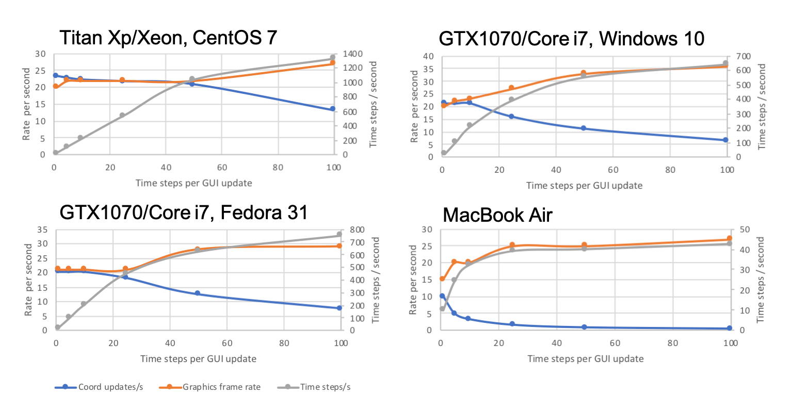

ISOLDE performance benchmarks
Notes for Apple users with AMD GPUs
Performance of molecular dynamics simulations on AMD GPUs such as those used in, for example, the larger MacBook Pro models, is unfortunately quite underwhelming. It is not entirely clear why, but preliminary results suggest this is due to deficiencies in the AMD OpenCL driver rather than the cards themselves: for the Radeon Pro 560X found in the 2018 model 15" MacBook Pro, the GeekBench 5 Particle Physics benchmark for OpenCL runs about 6 times slower than the same benchmark using Apple's Metal GPU compute API. Further, deficiencies in the OpenCL driver's reporting of GPU characteristics causes OpenMM to typically automatically choose the smaller onboard Intel GPU for simulations (see the MacBook Air benchmarks below for indicative performance). If you wish, you can force it to use your AMD GPU using the command "isolde set gpuDeviceIndex 2" (or by setting the environment variable ISOLDE_DEVICE_INDEX=2 prior to starting ChimeraX). On 2018 and newer MacBook Pro models this should yield a ~4-5 fold improvement in performance.
General performance notes
While ISOLDE is designed for optimum performance on machines with a moderate-to-high-end Nvidia GPU, it will run with varying degrees of usability on almost any system with an OpenCL 1.2 capable GPU. The benchmarks here were run in ISOLDE 1.0b4.dev2 on the systems listed below. All machines use a single GPU for both compute and display.
GTX1070/Core i7
This is an Asus ROG Strix GL502VS gaming laptop, dual booting Windows 10 and Fedora 31 (both operating systems were tested)
CPU: Intel Core i7 6700HQ @ 2.60 GHz (8 hyperthreads)
GPU: Nvidia GTX 1070
Display: 3840x2160, 60 Hz
Titan Xp / Xeon
OS: CentOS 7
CPU: dual Xeon E5-2687W @ 3.10 GHz (32 hyperthreads)
GPU: Nvidia GTX Titan Xp
Displays: dual screen configured as single 3520x1200 desktop, 60 Hz
MacBook Air
Early 2015 model
OS: MacOS Mojave 10.14.6
CPU: Intel Core i5 1.6 GHz (4 hyperthreads)
GPU: Intel HD Graphics 6000
Display: 1440 x 900, 60 Hz
For each benchmark system, the simulation was run with the number of timesteps between GUI coordinate updates set to 1, 5, 10, 25, 50 or 100, recording both the time between coordinate updates and the graphics frame rate for each setting. The graphs plot the number of coordinate updates per second in blue and the graphics frame rate in red, with values on the left axis. The effective number of simulation time steps per second is also plotted in grey with values on the right axis.
Benchmark 1: 3io0 (3Å crystal structure, 3348 atoms)
Conditions
- Live rotamer and Ramachandran validation
- Live structure factor calculations
- Map masking updated every 0.5 seconds or each structure factor update
- Live crystallographic symmetry visualisation
1a: all atoms mobile
Replication commands:
isolde demo crystal_intro
isolde sim start #1

1b: single loop (1942 simulated atoms, 663 mobile)
Replication commands:
isolde demo crystal_intro
isolde sim start /A:87
Benchmark 2: 6out (2.6Å cryo-EM, 22945 atoms)
Conditions
- Live rotamer and Ramachandran validation
- Map masking updated every 0.5 seconds
2a: all atoms mobile
Replication commands:
isolde demo cryo_em_intro
isolde sim start #1
2b: single loop (2567 simulated atoms, 774 mobile)
Replication commands:
isolde demo cryo_em_intro
isolde sim start /A:296